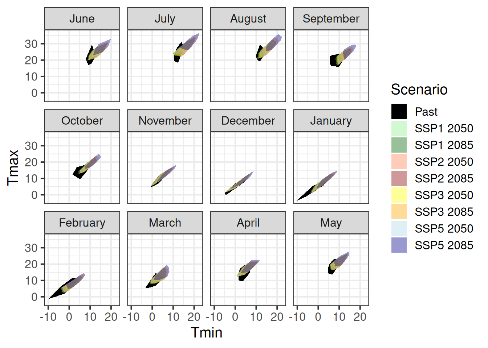
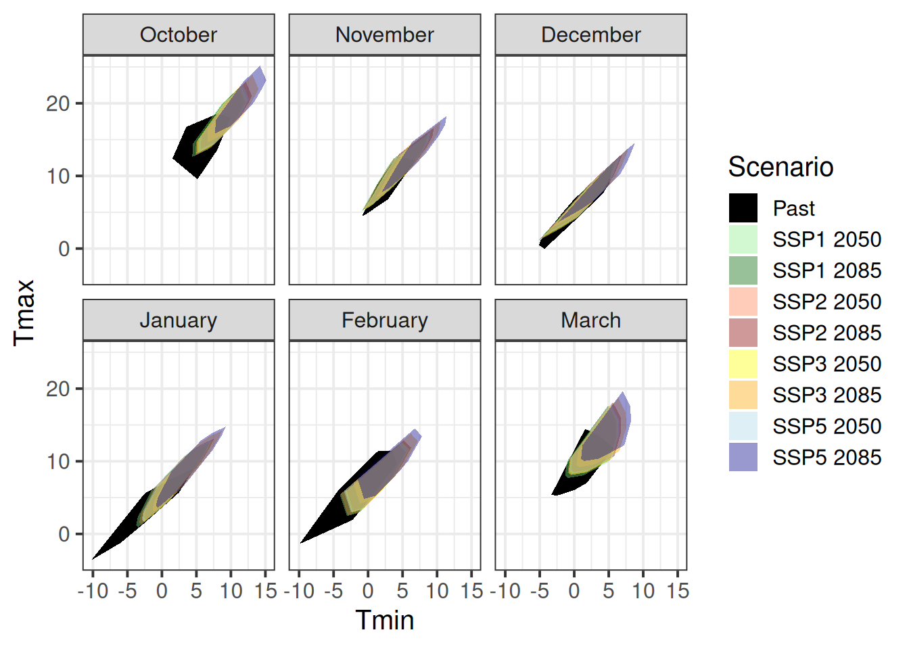
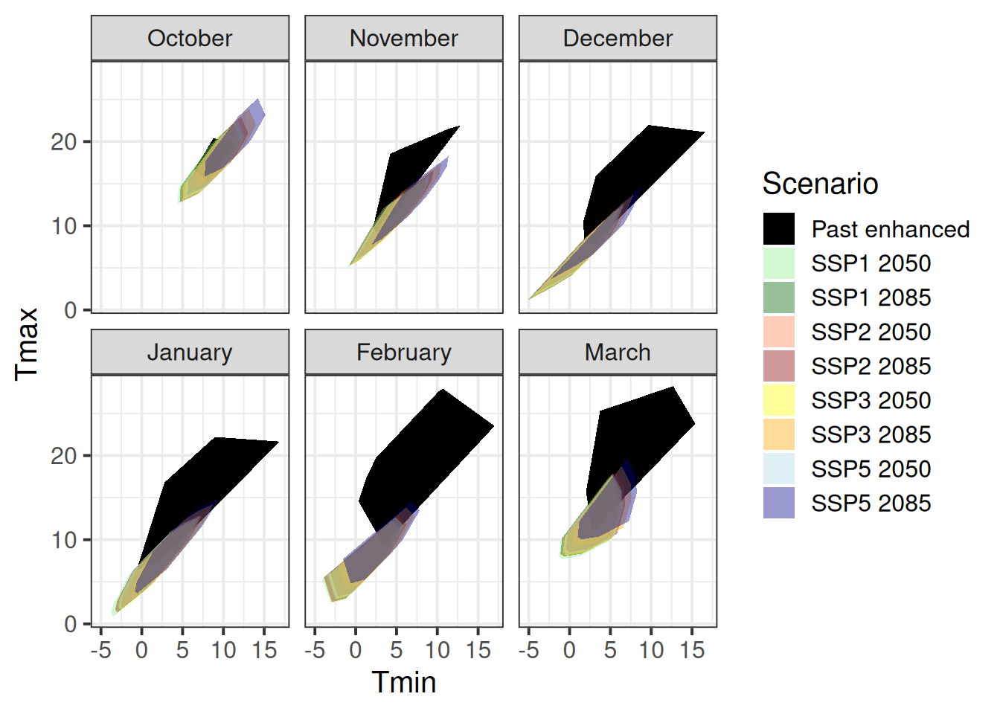

Chapter 29 Making valid tree phenology models
Learning goals for this lesson
- Understand why models should not just be validated based on the output they produce
- Learn the difference between output validation and process validation
- Understand what validation for purpose means
- Learn what validity domains of models are
- Get an idea of what it takes to make models that can be trusted with projections under future temperature conditions
29.1 The modeling challenge
We’ve already touched on the challenges of modeling winter chill a few times, but so far we’ve stayed away from the full challenge of modeling the whole dormancy season - and making predictions of budburst dates. Today, we’ll start getting into this topic.
I’m not going to systematically review modeling attempts of the past. A major reason for this is that I’m too lazy to do that, but I’m also quite sure that there haven’t been many convincing modeling attempts so far. This is largely because several major challenges have stood in the way of generating a good model:
- uncertainty about the temperature response during chilling
- uncertainty about the temperature response during forcing
- uncertainty about possible interactions between chill accumulation and heat requirements
- uncertainty about start and end dates of chilling and forcing periods
On the other hand, we have experimental or observational evidence on tree responses during dormancy that a model should be able to explain:
- trees respond to chilling for some time, and to forcing later
- it seems likely that low chill accumulation can be compensated by additional heat
- high temperatures appear to cancel previously accumulated chill, to some extent at least
- trees show distinct responses to temperatures occurring in particular temperature cycles
- frost doesn’t seem to be effective for chill accumulation
- temperate tree crops can be grown even in fairly warm locations
- …
There are surely more things we know about trees during dormancy that should also be listed here. Credible models should include mechanisms that allow them, at least in principle, to explain phenomena we see. When models lack mechanisms that might explain important behavior that we see in orchards, they aren’t particularly credible.
Similarly, when models disregard the uncertainties listed above and are based on the assumption that processes that are still quite unclear are perfectly understood, it is difficult to take them very seriously.
In my view, this is true for virtually all full dormancy modeling frameworks so far - at least the ones I’m familiar with.
29.2 Validating models
There have certainly been some models that have been able to produce reasonably accurate predictions of observed bloom dates, but this doesn’t necessarily mean that they are actually accurate models. Comparing a model’s ability to predict observations that have been made is often used as the only way of validating models, but this is really not enough. I’ll distinguish here between output validation and process validation. In output validation, we only look at whether our model can predict what we actually observed. This can then be quantified with various measures, including Root Mean Square Error, Model Efficiency etc. With this validation method, however, we get very little information on whether the model actually did something reasonable. It’s quite possible that the model produced the right results for the wrong reasons, if we don’t bother to look under the hood.
Process validation is harder and it requires us to actually know something about the processes involved in the system of interest. I don’t know of any formal procedures for doing such a process validation, so we’re a bit on our own with this (unless you know of a method). What we need to achieve is a comparison of (our) knowledge about the biological processes that are at work with the set of processes that are included in the model. As in the chapter on Simple phenology analysis, we could consider starting this process with an influence diagram (a drawing with boxes and arrows) or some other schematic representation of our understanding of system dynamics. Or we can start with the kind of lists I showed above, and see if we can convince ourselves that our model covers these issues.
Note that we probably shouldn’t be too hard on the poor modelers, because it is awfully difficult to make good models. Sometimes not-so-perfect models are sufficient for the purposes of the people who use the models. But we should always remain critical and look for possible flaws in the products we might want to use.
Another important consideration in model validation is the purpose of the model, i.e. what do we actually want to use the model for. A validation for purpose would start with a reflection on what the model should be able to achieve and carefully evaluate whether we can realistically expect it to prove useful in the context we have in mind. This is important, because each model has a certain validity domain, i.e. the range of conditions that the model is capable of making reliable predictions for. To illustrate this point, let’s look at a very simple example:
require(ggplot2)
dat<-data.frame(x = c(1, 2, 3, 4),
y = c(2.3, 2.5, 2.7, 2.7))
ggplot(dat,aes(x = x,
y = y)) +
geom_smooth(method = "lm",
fullrange = TRUE) +
geom_smooth(method = "lm",
fullrange = FALSE,
col = "dark green") +
geom_point() +
xlim(c(0,10)) +
geom_vline(xintercept = 8, col="red") +
theme_bw(base_size = 15)In this figure, I’ve produced a very simple regression model based on measurements of y for x-values between 1 and 4. Can we use this model to predict the value of y for x=8, which is indicated by the red line? My guess is that most readers will have a bad feeling about this task - and for good reasons. The model’s validity domain is quite tightly circumscribed by the set of values that were used to produce the model - the range shown by the green regression line and the dark shaded area. We really have no way of knowing how the system of interest behaves outside this range. The blue line and the lightly shaded area should normally not even be drawn (and it took setting the fullrange parameter in geom_smooth to TRUE to make this appear).
Actually, what I just said isn’t always strictly true, unless you’re a true believer in the frequentist idea of science, where we assume that we know absolutely nothing except what the data tells us. If you’re not one of these people, you should have developed an expectation of how the system behaves even before running the regression analysis. If this expectation leaves you reasonably confident that the response variable you’re modeling behaves similarly for x=8 as for x=3, then you may be able to make such predictions. You should then clearly state that you’re making this assumption, however, and provide reasons for why you think this is justified.
Assuming that we have no reason to expect the regression model to be valid outside the range of values used to calibrate it, it is easy to see where we can expect reliable predictions and where we can’t. For more complex models, such as crop models or phenology models, this is much harder to see, and questions about validity domains are often not adequately addressed.
For us to have confidence in a phenology prediction model, we should expect model performance to be validated under conditions that resemble those we want to make predictions for. This may seem obvious, but it is actually pretty difficult to achieve, when your goal is, for example, to predict phenology responses to climate change. This is a pretty common objective of phenology modeling studies, and I’m not aware of any such studies having presented adequate evidence that the models that are applied actually meet this requirement.
The previous chapters have shown that questions about the validity domain of phenology models are justified. After all, we expect temperature responses to change as the climate changes, e.g. from a dominant effect of forcing temperatures to a greater importance of chilling temperatures. It is of course possible to build such models, but most analyses use relatively simple equations to describe phenology changes, which clearly don’t allow for changes in temperature response dynamics.
When we can have little confidence that models sufficiently capture the temperature-responsive processes that are going on in our system, it is hard to know what to make of them. Especially when such studies make no attempt to quantify the possible error that results from this omission, we really get very little out of such analyses. They provide numbers we can’t trust, and they don’t offer information on how reliable they are. Usually we also don’t get clear indications of the major assumptions about system biology that were made in producing the models. Such studies, in my opinionated view, are useless at best, and misleading at worst.
29.3 Mapping validity domains
Let’s assume we made a phenology model based on historic phenology observations at Klein-Altendorf, and we wanted to use this model to predict future phenology at the same location. We can map the validity domain of our model by plotting the range of conditions under which we’ve made observations.
We can then compare this range with the range of conditions we want to make predictions for, in this case the various future climate scenarios we produced in the chapter on Making CMIP6 scenarios. We saved all of these data earlier (I hope you did…), so we can just load them now. I’ll also convert the data into one long data.frame, with all the attributes (Time horizon, GCM, SSP) stored with each data point.
require(chillR)
past_weather <- read_tab("data/TMaxTMin1958-2019_patched.csv")
past_weather$SSP_Time <- "Past"
future_temps <- load_temperature_scenarios("data/future_climate",
"Bonn_futuretemps")
SSPs <- c("ssp126", "ssp245", "ssp370", "ssp585")
Times <- c(2050, 2085)
list_ssp <-
strsplit(names(future_temps), '\\.') %>%
map(2) %>%
unlist()
list_gcm <-
strsplit(names(future_temps), '\\.') %>%
map(3) %>%
unlist()
list_time <-
strsplit(names(future_temps), '\\.') %>%
map(4) %>%
unlist()
for(SSP in SSPs)
for(Time in Times)
{Temps <- future_temps[list_ssp == SSP & list_time == Time]
names(Temps) <- list_gcm[list_ssp == SSP & list_time == Time]
for(gcm in names(Temps))
Temps[[gcm]] <- Temps[[gcm]] %>%
mutate(GCM = gcm,
SSP = SSP,
Time = Time)
Temps <- do.call("rbind", Temps)
if(SSP == SSPs[1] & Time == Times[1])
results <- Temps else
results <- rbind(results,
Temps)
}
results$SSP[results$SSP == "ssp126"] <- "SSP1"
results$SSP[results$SSP == "ssp245"] <- "SSP2"
results$SSP[results$SSP == "ssp370"] <- "SSP3"
results$SSP[results$SSP == "ssp585"] <- "SSP5"
results$SSP_Time <- paste0(results$SSP," ",results$Time)
future_months <-
aggregate(results[, c("Tmin", "Tmax")],
by = list(results$SSP_Time,
results$Year,
results$Month),
FUN = mean)
colnames(future_months)[1:3] <- c("SSP_Time",
"Year",
"Month")
past_months <-
aggregate(past_weather[, c("Tmin","Tmax")],
by = list(past_weather$SSP_Time,
past_weather$Year,
past_weather$Month),
FUN=mean)
colnames(past_months)[1:3] <- c("SSP_Time", "Year", "Month")
all_months <- rbind(past_months,
future_months)
all_months$month_name <- factor(all_months$Month,
levels = c(6:12, 1:5),
labels = month.name[c(6:12, 1:5)])The total range of point values can be described with a so-called convex hull. This is a polygon that includes all observed values. It is constructed from the smallest possible set of actual observations that still allows enclosing all observations by a polygon connecting all the data points.
Here’s how we can plot this with ggplot:
library(tidyverse)
# Calculate the hulls for each group
hull_temps <- all_months %>%
group_by(SSP_Time,
month_name) %>%
slice(chull(Tmin,
Tmax))
ggplot(hull_temps,
aes(Tmin, Tmax,
fill = factor(SSP_Time))) +
geom_polygon() +
facet_wrap(vars(month_name)) +
scale_fill_manual(name="Scenario",
breaks=c("Past",
"SSP1 2050",
"SSP1 2085",
"SSP2 2050",
"SSP2 2085",
"SSP3 2050",
"SSP3 2085",
"SSP5 2050",
"SSP5 2085"),
values=c("black",
alpha("light green",0.4),
alpha("dark green",0.4),
alpha("coral",0.4),
alpha("dark red",0.4),
alpha("yellow",0.4),
alpha("orange",0.4),
alpha("light blue",0.4),
alpha("dark blue",0.4))) +
theme_bw(base_size = 15)
It’s hard to see what’s going on here, so let’s only focus on the dormancy months.
ggplot(hull_temps[which(hull_temps$Month %in% c(10,11,12,1,2,3)),],
aes(Tmin,
Tmax,
fill = factor(SSP_Time))) +
geom_polygon() +
facet_wrap(vars(month_name)) +
scale_fill_manual(name="Scenario",
breaks=c("Past",
"SSP1 2050",
"SSP1 2085",
"SSP2 2050",
"SSP2 2085",
"SSP3 2050",
"SSP3 2085",
"SSP5 2050",
"SSP5 2085"),
values=c("black",
alpha("light green",0.4),
alpha("dark green",0.4),
alpha("coral",0.4),
alpha("dark red",0.4),
alpha("yellow",0.4),
alpha("orange",0.4),
alpha("light blue",0.4),
alpha("dark blue",0.4))) +
theme_bw(base_size = 15)
We see clearly that the data we collected in the past - the data we would presumably use to calibrate a phenology model - only cover a relatively small part of the temperature regime that we should expect in the future. Especially for SSP5, we’d be missing a substantial part of the range of expected conditions, if we relied on a model built with data collected in the past. This means that we should not use such a model to predict conditions for these future scenarios!
What if we based our model development on our experimentally enhanced observations?
enhanced <- read_tab("data/final_weather_data_S1_S2.csv")
enhanced$Year <- enhanced$Treatment
enhanced$SSP_Time <- "Past enhanced"
enhanced_months <- aggregate(enhanced[, c("Tmin", "Tmax")],
by = list(enhanced$SSP_Time,
enhanced$Year,
enhanced$Month),
FUN = mean)
colnames(enhanced_months)[1:3] <- c("SSP_Time", "Year", "Month")
all_months_enhanced <- rbind(enhanced_months,
future_months)
all_months_enhanced$month_name <- factor(all_months_enhanced$Month,
levels = c(6:12, 1:5),
labels = month.name[c(6:12, 1:5)])
# Calculate the hulls for each group
hull_temps_enhanced <- all_months_enhanced %>%
group_by(SSP_Time,
month_name) %>%
slice(chull(Tmin,
Tmax))
ggplot(hull_temps_enhanced[
which(hull_temps_enhanced$Month %in% c(10, 11, 12, 1, 2, 3)),],
aes(Tmin,
Tmax,
fill = factor(SSP_Time))) +
geom_polygon() +
facet_wrap(vars(month_name)) +
scale_fill_manual(name="Scenario",
breaks=c("Past enhanced",
"SSP1 2050",
"SSP1 2085",
"SSP2 2050",
"SSP2 2085",
"SSP3 2050",
"SSP3 2085",
"SSP5 2050",
"SSP5 2085"),
values=c("black",
alpha("light green",0.4),
alpha("dark green",0.4),
alpha("coral",0.4),
alpha("dark red",0.4),
alpha("yellow",0.4),
alpha("orange",0.4),
alpha("light blue",0.4),
alpha("dark blue",0.4))) +
theme_bw(base_size = 15)
This is also not such a great coverage of the scenarios we’re expecting, but mainly we’ve overshot our goal a bit, with much warmer scenarios in the experimental setting than are predicted for the future.
Maybe we need to combine historic conditions with our enhanced treatment.
past_months$SSP_Time <- "Past combined"
enhanced_months$SSP_Time <- "Past combined"
all_months_both <- rbind(enhanced_months,
past_months,
future_months)
all_months_both$month_name <- factor(all_months_both$Month,
levels = c(6:12, 1:5),
labels = month.name[c(6:12, 1:5)])
hull_temps_both <- all_months_both %>%
group_by(SSP_Time,
month_name) %>%
slice(chull(Tmin,
Tmax))
ggplot(hull_temps_both[
which(hull_temps_both$Month %in% c(10, 11, 12, 1, 2, 3)),],
aes(Tmin,
Tmax,
fill = factor(SSP_Time))) +
geom_polygon() +
facet_wrap(vars(month_name)) +
scale_fill_manual(name="Scenario",
breaks=c("Past combined",
"SSP1 2050",
"SSP1 2085",
"SSP2 2050",
"SSP2 2085",
"SSP3 2050",
"SSP3 2085",
"SSP5 2050",
"SSP5 2085"),
values=c("black",
alpha("light green",0.4),
alpha("dark green",0.4),
alpha("coral",0.4),
alpha("dark red",0.4),
alpha("yellow",0.4),
alpha("orange",0.4),
alpha("light blue",0.4),
alpha("dark blue",0.4))) +
theme_bw(base_size = 15)This is now a pretty good coverage for all months, with the possible exception of October, which wasn’t covered by our experiments. If we succeed in producing a model that performs satisfactorily under all conditions covered by the Past_combined scenarios here, we could confidently expect it to produce accurate forecasts of future phenology. This would then open the door to follow-on studies, e.g. on future frost risk.
But how do we develop a phenology model and parameterize it with observed phenology? Let’s see if we can find the answer in the next chapter on The PhenoFlex model.
29.4 One last thought on model validity
The example of phenology models is fairly straightforward, because we expect phenology to be almost exclusively dependent on temperature. Many other models depend on more factors that are difficult to keep track of. For example, crop models may only have been validated under a certain range of climatic conditions, with effective pest and disease control, for a particular set of crop varieties, for a selection of soils and for mechanized cultivation. Should we use such a model for smallholder systems under marginal soil and climate conditions, where farmers rely on manual cultivation methods? Probably not… (yet this is widely done)
Exercises on making valid tree phenology models
Please document all results of the following assignments in your learning logbook.
- Explain the difference between output validation and process validation.
- Explain what a validity domain is and why it is important to consider this whenever we want to use our model to forecast something.
- What is validation for purpose?
- How can we ensure that our model is suitable for the predictions we want to make?